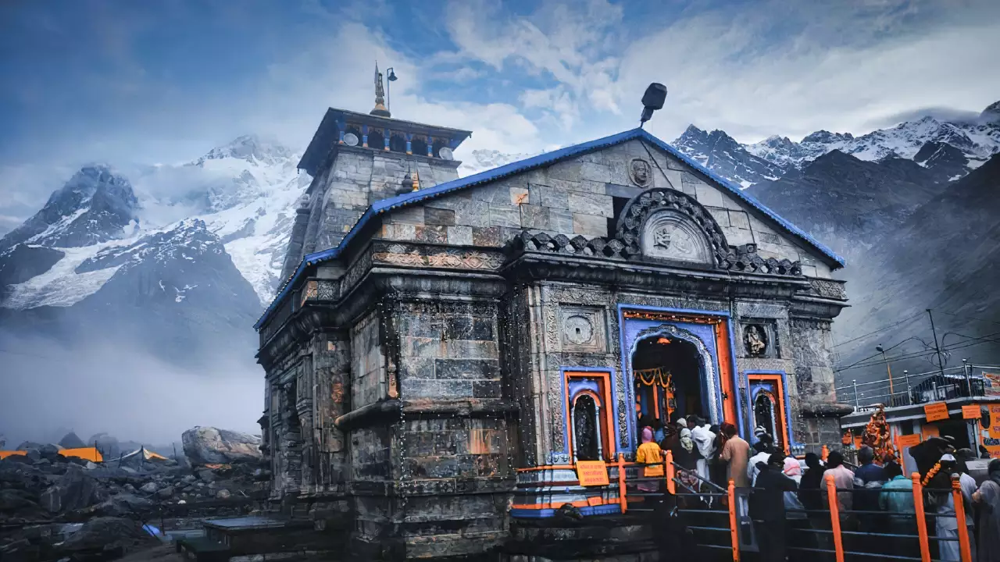

Char Dham Yatra Itinerary
Vadodara → Haridwar
Board Travels from Vadodara to Haridwar. Evening arrival. Attend Ganga Aarti at Har Ki Pauri.
Meals: Dinner

Haridwar → Barkot (Yamunotri Base)
Drive to Barkot, the base for Yamunotri. Evening rest.
Meals: Breakfast, Dinner
Yamunotri Darshan
Early morning trek/pony ride to Yamunotri Temple. Take a holy dip in Yamuna Kund. Return to Barkot for night stay.
Meals: Breakfast, Dinner

Rest & Stay at Barkot
Relax after Yamunotri trek. Short local walks, enjoy Himalayan views. Overnight in Barkot.
Meals: Breakfast, Dinner
Barkot → Uttarkashi
Drive to Uttarkashi. Evening visit to Vishwanath Temple. Stay overnight.
Meals: Breakfast, Dinner

Gangotri Darshan
Day excursion to Gangotri Temple. Take holy dip at Bhagirathi River. Return to Uttarkashi for overnight stay.
Meals: Breakfast, Dinner
Rest Day at Uttarkashi
Day free for rest, explore local temples and markets in Uttarkashi. Overnight stay.
Meals: Breakfast, Dinner
Uttarkashi → Guptkashi (Kedarnath Base)
Drive to Guptkashi. Evening rest and Kedarnath trek prep. Overnight stay.
Meals: Breakfast, Dinner
Kedarnath Trek & Darshan
Early morning trek to Kedarnath Temple (or by helicopter). Attend evening Aarti. Overnight at Kedarnath.
Meals: Breakfast, Dinner
Rest Day at Kedarnath / Return to Guptkashi
Spend morning in Kedarnath for spiritual peace. Trek back to Guptkashi in afternoon. Overnight at Guptkashi.
Meals: Breakfast, Dinner

Guptkashi → Badrinath
Drive to Badrinath via Joshimath. Evening Aarti at Badrinath Temple.
Meals: Breakfast, Dinner

Badrinath Darshan & Mana Village
Morning darshan at Badrinath Temple. Visit Mana Village (last Indian village near Tibet). Overnight in Badrinath.
Meals: Breakfast, Dinner
Rest at Badrinath
Day at leisure. Explore hot springs, meditation and spiritual atmosphere of Badrinath.
Meals: Breakfast, Dinner
Badrinath → Rishikesh
Drive down from Badrinath to Rishikesh. Evening Aarti at Triveni Ghat. Overnight stay in Rishikesh.
Meals: Breakfast, Dinner
Return to Vadodara
Check out after breakfast. Board Travels from Rishikesh/Haridwar to Vadodara via Nathdwara . Yatra ends with blessings.
Meals: Breakfast